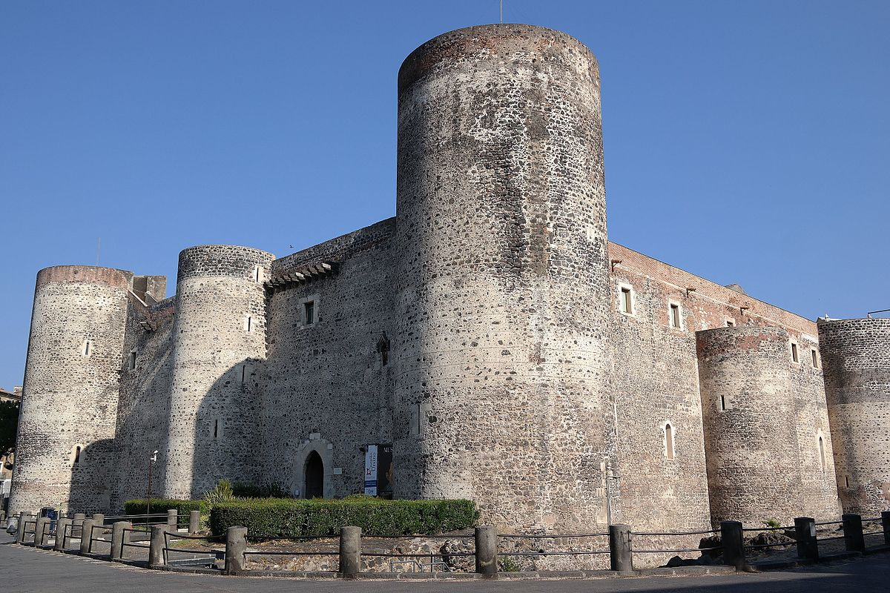
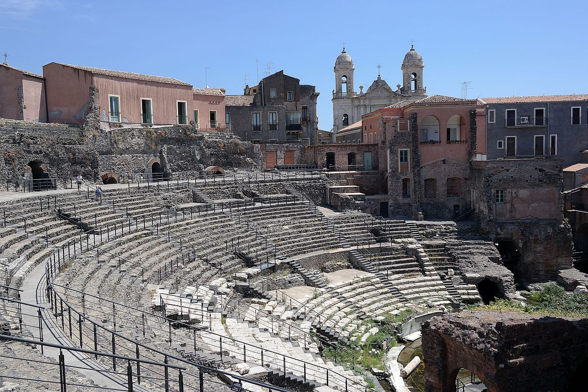

Catania è una città d'arte favolosa, storicamente multiculturale ricca di ogni tipo di bene.
I ristoranti di Catania sono qualitivamente eccezzionali, possono offrire di tutto, ristoranti pizzeria, ristoranti di pesce, cucina locale, cucina fast-food.
La grandezza della città di Catania permette ai visitatori una vasta scelta di opzioni in cui dormire, si possono cercare alloggi vicino al mare, nel centro storico o persino in montagna.
Catania offre un'ampia scelta di centri commerciali da visitare.
I paesi vicini alla città non sono da meno, sono delle vere perle da visitare e ce ne sono moltissimi.